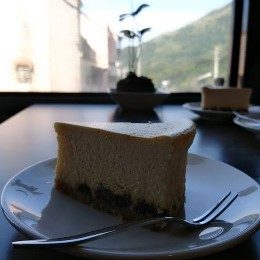

takamin55's blog
Categories
Tags
About
Categories
Tags
About
Hi, I'm takamin55
A software engineer who likes beautiful CI/CD pipelines.

Work
💎 Golang
☕ Java
🏅 TypeScript
🐈⬛ GitHub Actions
🎋 Terraform
🐳 Docker
🍊 AWS
🧊 GCP
Hobby
♟️ Chess
🍔 Hamburger
🏝️ Traveling
Blog.
『妄想代理人』を見た感想
January 3, 2025
More stories...
2024 振り返り（自己実現の自覚）
December 31, 2024
クラブイベント"V.H.S.Ⅱ"への参加とハレトキドキとの出会い
October 21, 2024
『勉強の哲学』を読んだ感想｜勉強とは、を自分なりに考える
October 9, 2024
2023 振り返り(転職・新趣味発見)
December 16, 2023
2023年を振り返ってみる。仕事面とプライベート面で振り返る。